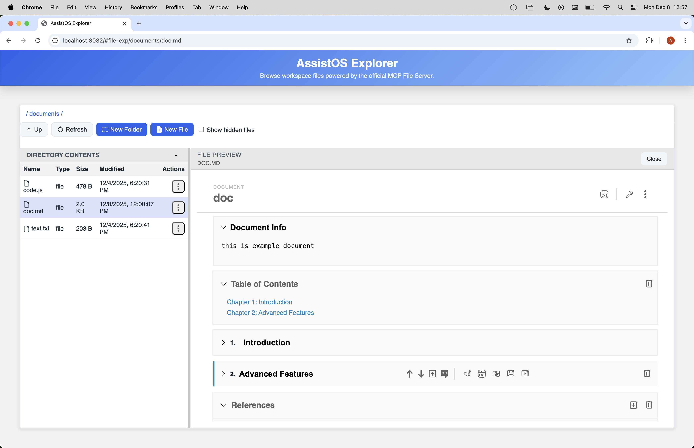

Document Model And Editing
Explorer treats Markdown as a first-class source format, but it does not assume that every .md file should enter the structured SOPLang document editor. The default Markdown edit path is source editing through the embedded TinyMDE editor. Workspace Markdown receives stable identity metadata and private Automerge state, while chapters, paragraph controls, commands, and other structured UI remain exclusive to the explicit structured workflow.
The structured document model is still available when a Markdown file needs it. The user enters that mode explicitly through the SOPLang tag editing action. In that mode, Explorer hydrates the file into a document tree so chapters can be inserted and reordered, paragraphs can carry their own commands and metadata, references can remain attached to the document, and document-level actions can operate on real structure rather than on fragile text conventions.
Document Model
When the user opens SOPLang tag editing for a Markdown file, Explorer hydrates the file into an in-memory document representation through the DocumentStore service. The important step is hydrateDocumentModel, which reads the visible Markdown together with the embedded achilles-ide-* comment markers and turns them into a document tree with document metadata, chapters, paragraphs, comments, references, commands, and other structured state. The stored file is still Markdown, but the structured UI works against a richer model than plain text.
That model is also the persistence contract. Markdown is not abandoned in favor of a hidden database format; the structure is encoded back into the file through metadata and commands that survive serialization. This is why SOPLang commands, document information, chapter metadata, and references can remain stable across load and save cycles. The Markdown file is both readable source and structured persistence layer.
A representative file can look like this:
<!-- {"achilles-ide-document":{"id":"L2RvY3VtZW50cy9kb2MubWQ=","title":"doc","infoText":"this is example document","comments":{"toc":{"collapsed":false},"tor":{"collapsed":false,"references":[{"id":"1765191283759","type":"journal","authors":"Smith, J. R., & Doe, A. B.","year":2024,"title":"The Evolving Role of Machine Learning in Predictive Modeling.","pages":"112-135","url":"International Journal of Technological Research,"},{"id":"1765191353867","type":"book","authors":"Johnson, K. T.","year":2022,"title":"Principles of Modern Data Structures and Algorithms.","publisher":"Technical Press Inc.","location":"New York, NY."}]}},"version":1,"updatedAt":"2025-12-08T11:02:37.023Z"}} -->
# Demo Document
This is a demonstration of a structured Markdown document in the Achilles IDE.
## Table of Contents
- [Chapter 1: Introduction](#chapter-chapter-7ee41719-ab70-4cf2-9286-2a65534c9512)
- [Chapter 2: Advanced Features](#chapter-chapter-2)
<!-- {"achilles-ide-chapter":{"id":"chapter-7ee41719-ab70-4cf2-9286-2a65534c9512","title":"Introduction","commands":"@media_image_dcfb80 attach id 512e672bd91e9861eb0f21e2dedd943d6257c123afde52c3 name trevi.jpg width 669 height 446 size 92987\n","comments":{"status":"ok","plugin":"edit-variables","pluginLastOpened":"edit-variables","collapsed":false},"anchorId":"chapter-chapter-7ee41719-ab70-4cf2-9286-2a65534c9512"}} -->
<a id="chapter-chapter-7ee41719-ab70-4cf2-9286-2a65534c9512"></a>
## Introduction
<!-- {"achilles-ide-paragraph":{"id":"paragraph-e696c9a7-8db8-4722-a693-1ba44ea64ebd","type":"markdown","commands":"@media_image_50a8ed attach id cea79d6a5e6b48dd4130f85d04c4476fda6655514bba082e name trevi.jpg width 669 height 446 size 92987\n","comments":{"status":"ok","plugin":"edit-variables","pluginLastOpened":"edit-variables"},"title":"Paragraph 1"}} -->
This is the first paragraph of the introduction. It explains the purpose of this document. The structured nature of this file allows for context-aware plugins and actions.
<!-- {"achilles-ide-paragraph":{"id":"paragraph-2","type":"markdown","commands":"@test_var := test_value\n","comments":{"status":"ok","plugin":"edit-variables","pluginLastOpened":"edit-variables"},"title":"Paragraph 2"}} -->
This second paragraph can have its own set of comments, references, and embedded commands.
<!-- {"achilles-ide-chapter":{"id":"chapter-2","title":"Advanced Features","comments":{"collapsed":true},"anchorId":"references-section"}} -->
<a id="references-section"></a>
## Advanced Features
<!-- {"achilles-ide-paragraph":{"id":"paragraph-3","type":"markdown","title":"SOPLang Commands"}} -->
This paragraph demonstrates an embedded SOPLang command for media. While it appears as a command here, the IDE will render it as a rich media element.
<!-- {"achilles-ide-paragraph":{"id":"paragraph-4","type":"markdown","comments":{"status":"ok","plugin":"edit-variables","pluginLastOpened":"edit-variables"},"title":"Another Paragraph"}} -->
This paragraph contains a command that will be parsed by the system.
<!-- <achilles-ide-references> -->
<a id="references-section"></a>
## References
1. Smith, J. R., & Doe, A. B. (2024). The Evolving Role of Machine Learning in Predictive Modeling.. International Journal of Technological Research,
2. Johnson, K. T. (2022). *Principles of Modern Data Structures and Algorithms.*. New York, NY.: Technical Press Inc..
In that representation, document metadata holds the title and info text, chapters keep their own identities and commands, paragraphs retain their own titles and command blocks, comments remain attached to the document node they belong to, and references stay centralized in the document metadata. The same structure also supports snapshots, tasks, and variable-oriented workflows when those features are used.
Document Workflows
There are two editing workflows for Markdown. Edit opens the normal Markdown source editor, powered by TinyMDE and tied into Explorer's dirty-state and save UI. Workspace files send incremental text changes through Explorer's Markdown CRDT contract; Confidential DPU Markdown keeps its DPU-backed write flow. The link action opens a themed modal for text, URL, optional title, validation, and Markdown preview. The image action uploads PNG, JPEG, WebP, or GIF files up to 20 MB into a sibling <document>.assets/ directory and inserts a relative Markdown reference; image drag-and-drop follows the same path. Confidential DPU Markdown does not copy images into the public workspace. Advanced edit opens the structured document workflow described below.
Once the model is hydrated, Explorer can expose document-specific workflows that would be fragile in a plain text editor. Users can insert, reorder, rename, or delete chapters and paragraphs while keeping their structural IDs aligned. They can edit document title and info text without manually rewriting metadata blocks. They can manage comments and references in context instead of scattering them across ad hoc text conventions. And because SOPLang commands are part of the document structure, media commands and variable-oriented flows remain attached to the document nodes they belong to.
Several UI features follow directly from that structure. The table of contents is generated from the chapter model rather than from a separate outline file. Comments belong to the document, chapter, or paragraph where they were created. References live in document metadata and are rendered through the reference UI rather than as disconnected prose. Snapshots, tasks, and variables are additional structured layers that can travel with the document rather than being bolted on through unrelated storage.
Examples of those workflows include setting Title and Info Text in the document metadata, generating a table of contents from chapter headings and anchor IDs, storing paragraph-level comments such as “Clarify API version”, persisting a shared references array for citations, and carrying variables or media commands such as @media_image_123 attach id "blob-id" name "hero.png" directly in the document source.
The screenshots below show the structured editing experience rather than the raw stored source:



Collaboration and CRDT
Workspace Markdown source editing and SCRIPTA operations use an Automerge CRDT. Explorer opens or initializes the CRDT state, persists a generated document ID in the Markdown metadata on first initialization, applies incremental changes, merges remote changes, and materializes the converged state back to the Markdown file. The canonical CRDT state is kept under .data/explorer/automerge/documents/<document-id>.automerge; rename and move operations therefore preserve identity while the Markdown file remains portable. Sanitized SCRIPTA collaboration replicas are stored separately under .data/explorer/automerge/scripta-collaboration/.
All structured mutations use the Explorer CRDT contract for open, pull, mutate, merge, save, and delete operations. The server serializes mutations per document, validates the workspace path, and keeps SCRIPTA collaboration data separate from private author or reaction metadata before exposing a public replica. Direct writes to the structured Markdown source must not bypass this path because they can discard CRDT history or concurrent changes.
Plain Markdown changes carry the Automerge heads that correspond to the editor's visible text. Explorer applies each delta to a fork at those heads and merges it with the current state, so concurrent offsets are never reinterpreted against newer text. This CRDT path is distinct from Office collaboration: .docx, .xlsx, and .pptx files use OnlyOffice's co-editing transport and callback-based persistence.
Other Files In The Editor
Explorer still needs to open ordinary files, so the structured document UI is intentionally not applied to everything. Plain text files, source code, and configuration files remain single editable resources. Markdown source sessions use the generic CRDT persistence contract but still expose no chapter controls, paragraph actions, or structured plugin context unless the user enters SOPLang tag editing.
Office-class documents such as .doc, .docx, spreadsheets, presentations, and PDFs are delegated to OnlyOffice when that service is configured. Explorer opens a protected OnlyOfficeAgent session for the selected path; OnlyOfficeAgent then builds the signed editor config, serves loopback document and callback URLs to the co-located Document Server, and routes persistence to either the mounted workspace filesystem or dpuAgent for Confidential paths. Explorer reuses the currently active session while its editor remains mounted. Each newly created session receives a distinct store-minted 128-bit document.key, so a fresh session deliberately remounts the editor even for the same file and version; no key is derived from document metadata.
The key distinction is therefore not whether a file is visible in the same shell, but which model Explorer applies to it. Normal Markdown editing stays source-oriented. SOPLang tag editing enters the structured document workflow. Other files remain raw text from a structural point of view, even when the editor adds syntax highlighting for readability. That highlighting improves comprehension for code and config work, but it does not turn those files into document objects with chapters, commands, references, or paragraph-level actions.
Typical examples are opening config/app.json to edit configuration or src/main.js to edit code with syntax highlighting. Those interactions still happen inside Explorer, but they use the general editor rather than the document runtime.